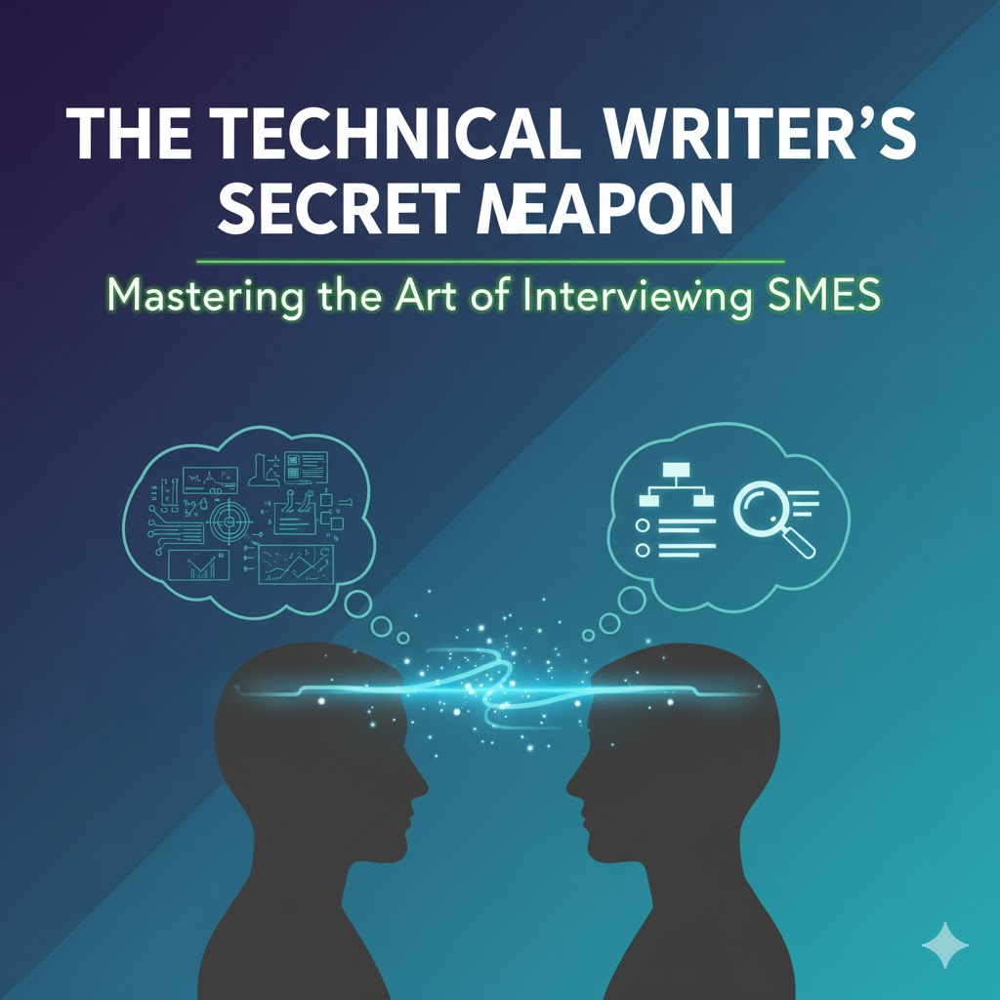

Stop Writing How-To Guides: Focus on Task-Based Documentation
Tired of users struggling with your 'how-to' guides? Learn why task-based documentation is more effective, user-friendly, and drives better product adoption. Transform your technical writing today.

The Technical Writer's Secret Weapon: Mastering the Art of Interviewing SMEs
Interviewing Subject Matter Experts (SMEs) is a critical, often underestimated skill for technical writers. It's how they extract complex information and translate it into clear documentation. This topic provides practical, actionable advice that many writers struggle with.